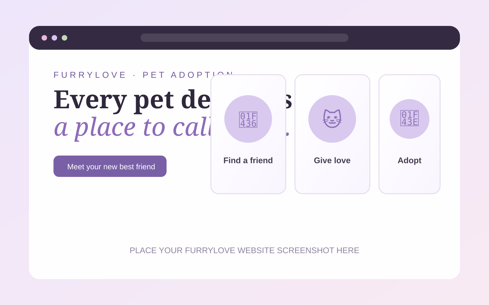
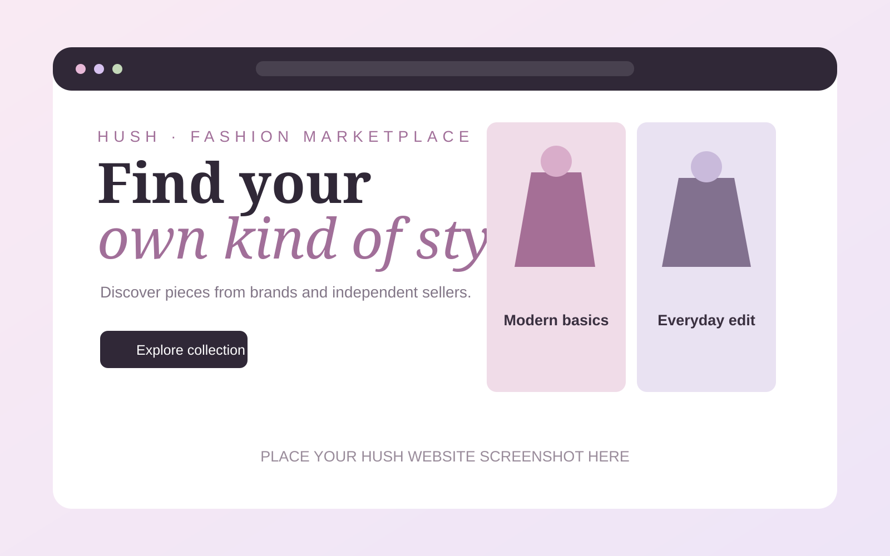
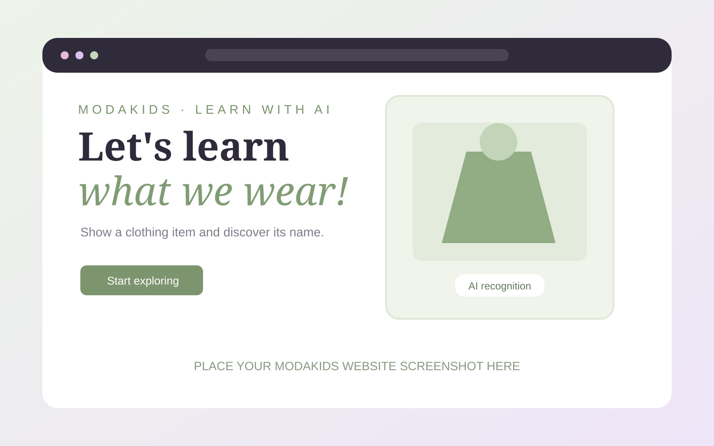

“I don't need to know everything today. I just need to keep learning, trying, and moving forward.”
CuriosityResponsibilityTeamwork
A THOUGHT I LIKE TO KEEP CLOSE ♡
A PERSONAL INTRODUCTION
Student · Future Tourism Management professional
I’m interested in technology, web development, and the ways digital experiences can bring people closer to places, ideas, and opportunities. I’m learning, creating, and finding my own way to connect these interests.
My goal is to turn what I learn into experiences that make a difference — with curiosity, purpose, and a human touch.
01 / WHO I AM
A little about my journey, what I value, and the person behind these projects.
“I don't need to know everything today. I just need to keep learning, trying, and moving forward.”
A LITTLE ABOUT MY STORY 01 — 03
My name is Alisson Rivas, and I am a student from El Salvador with a strong interest in technology and the ways it can help people. I enjoy learning how websites are planned and developed, organizing information, and turning ideas into something useful.
Thanks to ¡Supérate! ADOC, I have been able to develop skills in web development and explore different tools and technologies. Through projects and teamwork, I have practiced creating websites, solving problems, sharing ideas, and learning from each stage of the process.
My next academic goal is to study a Bachelor's Degree in Tourism Management at Universidad Dr. Andrés Bello (UNAB). I would like to connect my interest in technology with tourism, because digital tools can help people discover destinations, plan experiences, and connect with local businesses and communities.
02 / MY PERSPECTIVE
Technology is one of the tools I want to carry into my future in tourism.
A CONNECTION I WANT TO EXPLORE
For me, technology is more than code or screens. It is a way to solve everyday problems, share information, and create opportunities. I like that one idea can become a website or a digital tool that makes something easier for another person.
As I prepare to study Tourism Management, I am especially interested in the connection between technology and travel: digital platforms that help visitors discover places, learn about local culture, and enjoy more accessible experiences. I want to keep learning so I can contribute to that connection.
03 / SELECTED WORK
Each project gave me the opportunity to collaborate, practice my technical skills, and learn how to turn an idea into a digital solution.
A website created to help dogs and cats living in shelters find a loving home and connect with people interested in adoption.
Animals in shelters need visibility so more people can learn about them and consider giving them a home.
We developed a website focused on pet adoption, making animal and shelter information easier to explore.
Alisson Rivas, Wuilber Molina, Valeria Ortiz, Sofia Ramos, and Magdalena Berrios.
Collaborative development, connecting a website with a database, and designing around a social need.
A fashion website where people can explore and compare clothing from different brands and independent sellers, as well as sell their own clothes.
Finding clothing from different brands and individual sellers can mean visiting many different places.
We designed a shared online space to promote clothing, help users discover options, and give sellers a place to offer their products.
Alisson Rivas and Arianna Sosa.
Building a website with a partner, organizing product information, and thinking about both buyers and sellers.
An educational website that helps children identify clothing items by showing them to a camera connected to an AI model.
Children can benefit from interactive and visual activities that make learning more engaging.
We used a Teachable Machine model so the website can recognize a clothing item shown to the camera and identify it for the child.
Alisson Rivas, Arianna Sosa, and Oneida Estrada.
Exploring AI-powered image recognition and making an interactive tool more accessible to young users.
A CLOSER LOOK
Selected screens from the websites. These images are added directly in the HTML.



04 / WHAT I BRING
The abilities I have been developing through my studies, projects, and teamwork.
I believe skills grow through practice. These are some of the tools and strengths I bring to a team — and keep developing with every new experience.
Things I have practiced building.
Practical experience creating websites, organizing page content, and connecting web projects with different technologies.
How I approach my work.
I value doing my part, listening to others, staying organized, and being open to feedback and new ideas.
The person behind the work.
I enjoy learning with others, taking on new challenges, and improving through experience, one step at a time.
Currently growing: combining my digital skills with my future studies in Tourism Management.
↗05 / LET'S CONNECT
I am always open to learning, sharing ideas, and connecting with people who value growth and collaboration.